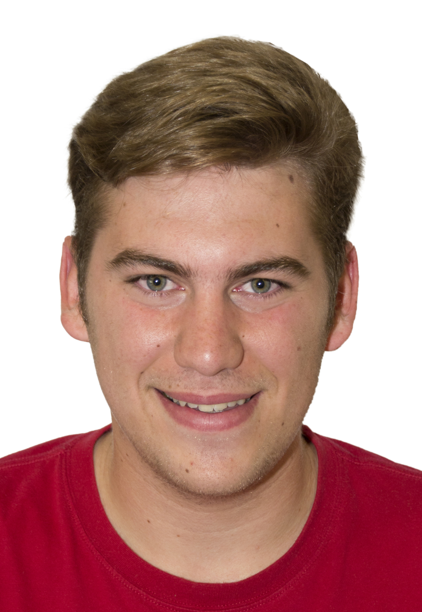

Desarrollador de software especializado en el ecosistema Java y Spring Boot. Construyo lógica de negocio robusta e interfaces de escritorio impecables desde mi entorno Linux Mint.

No soy un programador tradicional. He recorrido los tres pilares de la informática, lo que me permite entender el software desde el hardware hasta el usuario final.
Comencé montando y configurando redes (Microinformática), pasé por el diseño y la experiencia de usuario (Animación 3D), y ahora centralizo todo en la lógica del desarrollo (DAM). Entiendo las limitaciones de la máquina y las necesidades del usuario.
Me obsesiona el 'Clean Code' y la arquitectura bien definida. Aunque mi núcleo fuerte es el Backend con Java y Spring Boot, disfruto enormemente creando el Frontend para lograr una sinergia perfecta entre una base de datos sólida y una interfaz visual atractiva.
Nunca empiezo a picar código a ciegas. Soy un firme creyente de la planificación previa: estructuro el proyecto, diseño la base de datos y planteo la arquitectura antes de abrir el IDE. Planificar bien ahorra horas de refactorización.
Las tecnologías y herramientas con las que trabajo a diario para dar vida a los proyectos.
Aplicaciones orientadas a la gestión, diseño a medida y prototipado visual.
Proyecto de fin de grado. Sistema integral de gestión de inventario altamente personalizable, con una identidad visual abstracta y una interfaz que prioriza la velocidad de uso y el minimalismo.
Software profesional en desarrollo para la gestión de aviarios y cría en canaricultura. Enfocado en el control de genealogía, alimentación y seguimiento clínico de ejemplares.
Aplicación de escritorio para digitalizar talleres de carpintería. Incluye control de stock de maderas, elaboración de presupuestos y cartera de clientes.
Diseño de ilustraciones vectoriales planas, paletas de colores sólidos e iconos UI/UX para prototipos de videojuegos móviles de gestión (temática cultural/procesional).
Software conectado a base de datos relacional para la administración eficiente de recursos humanos, control de nóminas y perfiles de empleados.